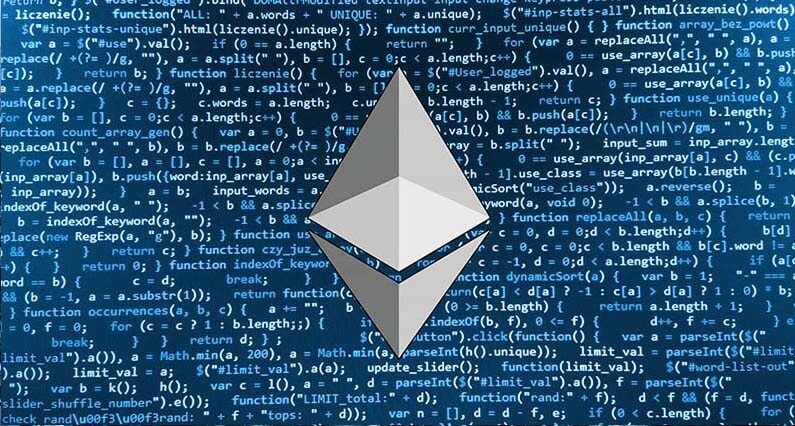
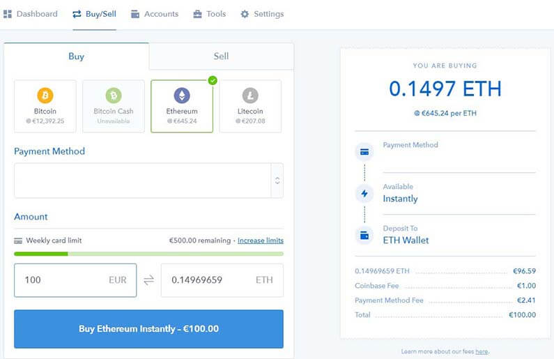
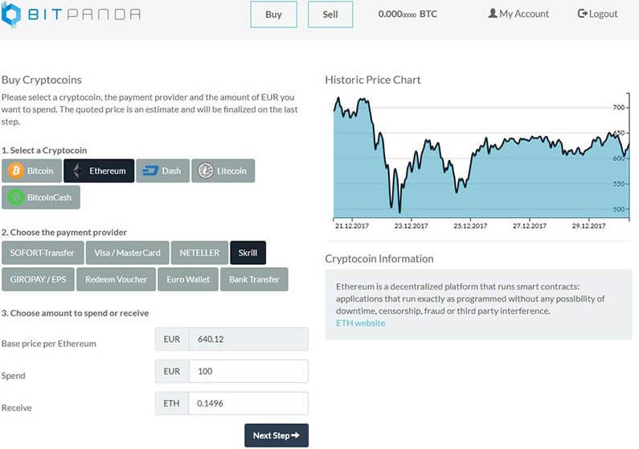

Mi az az Ethereum? - Útmutató kezdőknek
Ethereum a harmadik legnagyobb piaci tőkével rendelkező kriptopénz, ezért sok figyelmet kap befektetőktől és lelkes kripto rajongóktól egyaránt. Sok tekintetben Ethereum hasonló Bitcoin-hoz.
Nyílt forráskódú, blokklánc technológiára épül és még saját kriptopénze is van Ether néven.
Ethereum-ot Vitalik Buterin alapította 2014-ben azzal a céllal, hogy az Ethereum platformon úgynevezett „okos szerződés”-eket és decentralizált applikációkat lehessen építeni és futtatni.
Egyszerűen fogalmazva, Ethereum szándéka, hogy egy hatalmas számítógép legyen.
Ethereum vs Bitcoin
Ha érdekel Ethereum nagy az esélye, hogy valamiféle alaptudásod van már Bitcoin-ról. Elkerülhetetlenül, minden kriptopénz Bitcoin-nal kerül összehasonlításba, ez talán könnyebbé teszi a megértésüket.
A legnagyobb különbség a két projekt között a felhasználásuk és végcéljuk.
Bitcoin célja, hogy egy érték megőrző legyen, amolyan digitális arany, és idővel globálisan elfogadott valutává váljon amely javítja, vagy éppen lecseréli a hagyományos pénzt valamilyen szinten. Ezt a forradalmi blokklánc technológia tette lehetővé.
Ethereum célja viszont, hogy egy olyan platformmá váljon ahol „okos szerződés"-eket, és Decentralizált applikációkat(Dapp) lehessen futtatni.
Egy másik fontos különbség, a készlet. Amíg Bitcoin maximális száma 21 millió addig Ethereum-nak nincs határértéke.
Csakúgy mint Bitcoin-t Ethereum-ot is bányászással állítják elő.
De mi is az az Ethereum?
Egyszerűen, Ethereum (ETH) egy blokkláncra épülő decentralizált platform amin decentralizált applikációk(Dapp) építhetőek.
Az Ethereum blokkláncon, Bitcoin helyett a bányászok úgynevezett Ether-ért dolgoznak. Az Ether nem csak egy értékesíthető kriptopénz, hanem applikáció fejlesztők ezt használják tranzakciós, és szerviz díjak fizetésére, amiért használhatják az Ethereum hálózatot.
Szoftver fejlesztők építhetnek és futtathatnak applikációkat az Ethereum blokkláncon. A célja ezeknek, hogy fejlesszék a pénzügyi iparágat, személyes információk tárolását és a kormányzást azáltal, hogy egy a mindenki számára nyilvános blokklánc technológiát használnak.
Amíg Bitcoin tranzakciókat tárol egyes blokkokon addig az Ethereum blokklánc különböző típusú adatot tárol. Ezek az adatok hozzáférhetőek és használhatóak számítógépes programok által, amik az Ethereum hálózaton futnak. Ezek a programokat hívjuk decentralizált applikációknak(Dapps).
Okos szerződések
Az okos szerződések, számítógépes kódok amik automatikusan végrehajtódnak amikor bizonyos feltételek teljesülnek. Mivel az okos szerződések a blokkláncon futnak ezért mindenféle cenzúra, leállás vagy éppen csalás nélkül futhatnak.
Ethereum célja, hogy a mindennapi életet hatékonyabbá és gazdaságosabbá tegye automatizálva a mindennapi folyamatokat. Eltüntesse a közvetítőket a rendszerből amiket használunk. Ilyen lehet akár a jogi rendszer, pénzügyi rendszer, számítógépes rendszer és még sok más.
Egy egyszerű példa az okos szerződésre:
- Fogadsz egy barátoddal 100 Ether-ben, hogy Magyarország kijut a 2020 EB-re.
- Megállapodtok a programban ami megállapítja az eredményt az adott dátumon.
- Mindketten 100 ETH elhelyeztek letétben az okos szerződéssel, a nyertes pedig elviszi a teljes 200 ETH-t.
- Az adott dátumon a program végrehajtódik, és a nyertes megkapja a 200 ETH-t.
- Az okos szerződést használva semmi szükség, hogy megbízzatok egymásban. A program mindenképpen elvégzi a dolgát, csak a programban kell bíznotok.
Ez csak egy nagyon egyszerű példa az okos szerződésre. A legtöbb sokkal bonyolultabb és ennél lenyűgözőbb dolgokra képes.
Decentralizált applikációk(Dapp):
Mindenki látott, használt, letöltött egy applikációt a telefonjára, tehát mindenkinek van egy alap elképzelése, hogy miről is van szó. Legyen az egy időjárás előrejelző, vagy éppen Angry Birds.
Decentralizált applikációk hasonlóan működnek. De ahelyett, hogy egy központi szerveren működnének, egy egész számítógép hálózaton működnek. Ezzel hatalmas előnyökhöz jutva.
Bitcoin, például egy Dapp, ami egy elektronikus pénz rendszerrel látja el a felhasználókat, ami lehetővé teszi az online fizetéseket. Bitcoin-nak azonban saját blokklánca van. Aki Ethereum-ra épít applikációt, annak nem kell saját blokkláncot létrehoznia, mert az Ethereum blokklánc rendelkezésére áll. Ez nagyban megkönnyíti a fejlesztők dolgát.
Decentralizált applikációk további tulajdonságai:
Nyitott forráskódú - A felhasználók megnézhetik az applikáció kódját, ezért egy applikációnak semmi hátsó szándéka nem lehet.
Autonóm – Dapp-ok automatikusan működnek a beleírt szabályok szerint, ezért nincs helye külső korrupciónak.
Biztonságos – Adatok és protokollok titkosítva vannak tárolva a blokkláncon, ezért nem lehet feltörni.
Nincs leállás – A blokklánc mindig fut, ami azt jelenti az applikáció is mindig fut. Nincs szerver összeomlás.
Könnyebb kivitelezés – A fejlesztők akik használni szeretnék a blokklánc technológiát nem kell új blokkláncot létrehozniuk, mivel a keret ott van. Csak tranzakciós díjakat kell fizetni a használatért.
Annak ellenére, hogy sok előnyük van egyáltalán nem hibátlanok. Mivel az okos szerződést emberek készítik, ezért ezek csak annyira jók amennyire az emberek akik írják őket.
Ethereum tárolása
Ethereum-ot tárolhatod ingyenesen, a Jaxx vagy Exodus tárcákon. De a két legjobb hardver tárca is támogatja Ethereum-ot. Ledger Nano S és Trezor.
Bővebb ismertetőt Ethereum tárolásával kapcsolatban a kriptopénz tárcák menüpont alatt találsz.
Ethereum vásárlása
Legegyszerűbb módja az Ethereum (ETH) befektetésnek a népszerű kriptopénz váltók. Ezeken a weboldalakon hagyományos valutádat (általában USD vagy EUR) válthatod kriptopénzre.
Mire kell figyelni mielőtt csatlakozunk egy ilyen weboldalhoz:
- Megbízhatóság
- Díjak
- Fizetési opciók
- Verifikáció követelmények
- Földrajzi megkötések
- Váltási árfolyam
Kezdőknek ajánlott kriptopénz váltók:
Magyar forintért MrCoin.eu weboldala használható ahol gyorsan és egyszerűen beszerezhető Ethereum.
Coinbase
Coinbase az egyik legismertebb weboldal Ethereum vásárláshoz. A weboldal kezdőbarát, ami jelentősen megkönnyíti a kriptopénz beszerzését. A tranzakciós díjak tisztán látszanak a vásárlás folyamán, nincsenek elrejtett díjak.
Coinbase székhelye San Fransisco, USA-ban van, azonban fogadnak vásárlókat Magyarországról is. Banki SEPA utalással feltöltheted a Coinbase számládat. Általában 2-5 nap* alatt érkezik meg a pénz. Illetve lehet hitelkártyával is fizetni, de csak akkor ha rendelkezik 3D biztonsági kóddal.
Ethereum mellet lehetőséget biztosítanak Bitcoin, Litecoin és Bitcoin Cash vásárlásra is.
Elérhető nyelvek között szerepel Angol és Német.
*Mivel jelenleg ez a legnépszerűbb kriptopénz váltó a hatalmas forgalom miatt lehetnek akadozások, késések a ki- és befizetésben.
Itt regisztrálhatsz Coinbase-re!
BitPanda
BitPanda egy Ausztriában honos kriptopénz váltó. Ennél fogva teljes Európában használható, köztük Magyarországon is. Nagy előnye, hogy nagyon széles be- és kifizetési opciókat kínál. A weboldal kezdőbarát, nagyon egyszerűvé teszi a vásárlást. A tranzakciós díjakat nem külön jelzik hanem beleépítve az árba.
SEPA utalás, 3D biztonsági kóddal ellátott bankkártya mellett, lehet Skrill-t és Neteller-t is lehet használni, ezeknek a tranzakció ideje pár másodperc.
Elérhető kriptopénzek Bitcoin, Ethereum, Dash, Litecoin és Bitcoin Cash.
Támogatott nyelvek Angol és Német.
Itt regisztrálhatsz BitPanda-ra!
Magyar forintért MrCoin.eu weboldala is használható ahol gyorsan és egyszerűen beszerezhető Ethereum.
Konklúzió:
Ethereum alapítóinak elsődleges célja, nem csak az, hogy a befektetők sok pénzt csináljanak, hanem, hogy alapjaiban változtassák meg a világot. Az Ethereum közösség vonzza a támogatókat, akik szeretnék elérni ezt, csakúgy mint a Bitcoin közösség vagy a többi kriptopénz közösség, de a használhatósága sokkal széles körűbb mint a többi Altcoin-é.


2018. Január 05.